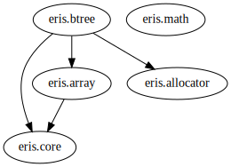

Custom memory allocators and related helpers.
In-place manipulation of slices.
Generic B-tree data structure.
Core type definitions, templates and helper procedures.
Miscellaneous numeric math.
The following list ranks the goals of this project, in order of importance:
Rationale for the first point is that it allows C developers to use D-generated code in their apps and libraries, even if that may require some explicit template instantations, manual symbol mangling directives and extern(C). The other goals constitute reasons for wanting to use this library in C or D codebases in the first place.
Since I still value my time and sanity, I gave up on trying to partition this library into DUB subpackages. So, if you want to use any particular module here without the rest of the project, just make sure you carry its dependency subtree along with it. Here's a dependency graph (forest) to help with that.

A non-standard library for DasBetterC.
This is the library I wish I had when I started using D as a better alternative and complement to C.